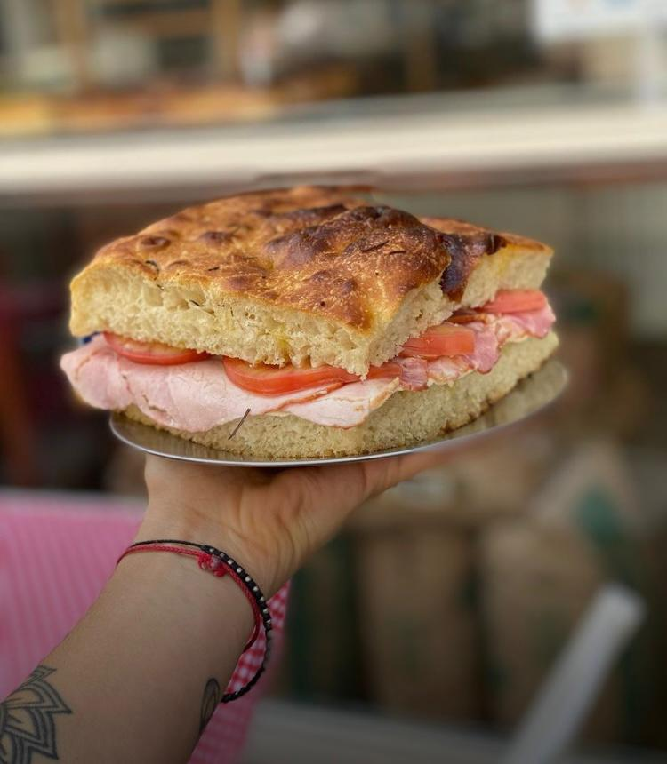
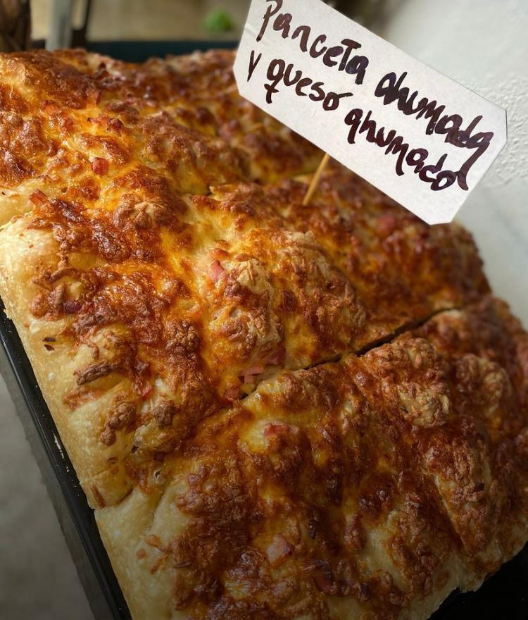
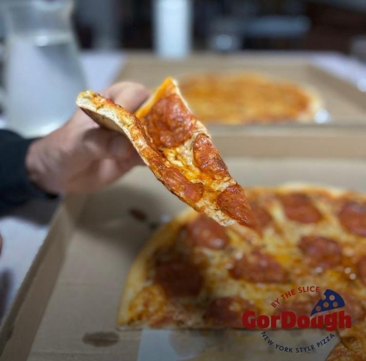
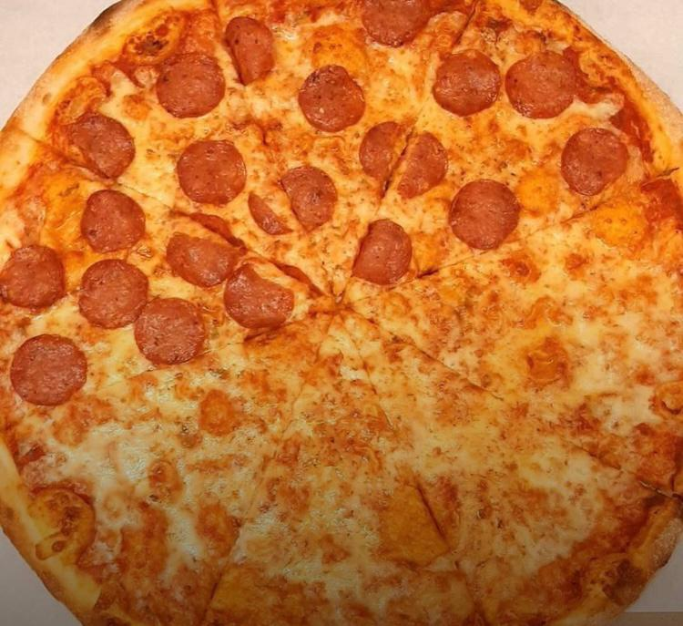
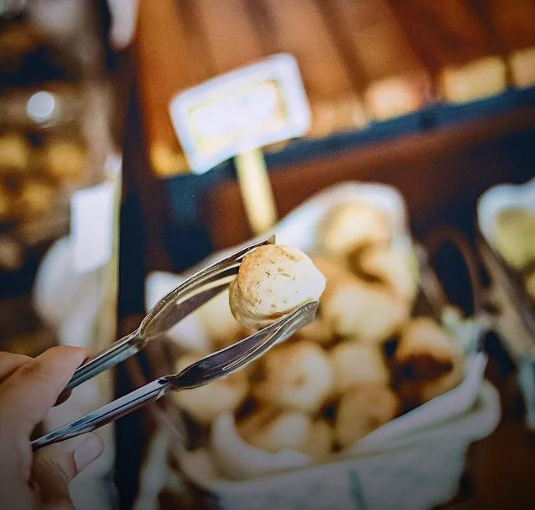
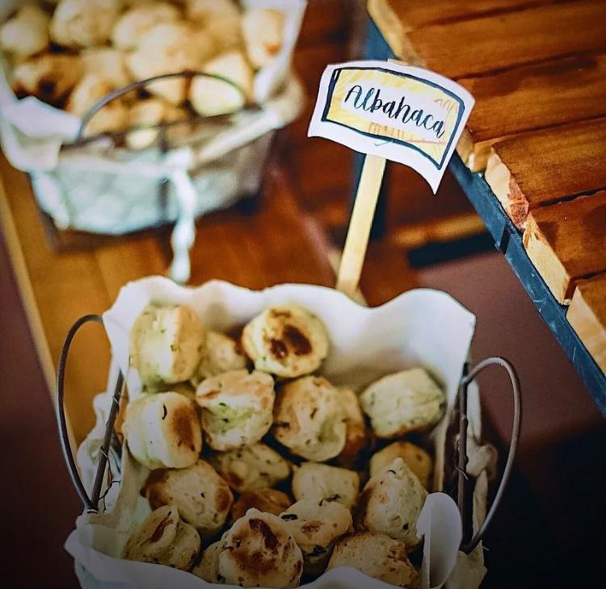

Se trata de una focacceria, la primera en el pais Tiene focaccias saborizadas,mi favorita tres quesos. Tambien unos sandwichs increibles,que valen la pena probrar,rebordan de relleno y su sabor es muy bueno. Se puede comer sobre la veredita y acompañar con diferentes bebidas como el Vermut.
 Es una pizzeria estilo New York. La pizza es extremandamente grande y sus sabores se asemejan a los de la gran ciudad estadounidense. Se puede pedir una pizza entera de los estilos ya creados por sus dueños o pueden pedir mitad y mitad,en mi caso prefieron este ultimo ya que mis favoritos son muzzarela y pepperoni. Tiene un hermoso lugar para veredear.
 Un lugar dedicado especialmente al Chipa. Tiene muchisima variedad de sabores, mis favoritos son Jamon Crudo y Cheddar con Panceta. Un punto muy a favor es que tenga delivery y tambien su apertura es durante toda la semana. Tambien ofrencen cafe para llevar o consumir en el lugar que es un plus al disfrutar tus chipa.
 